NATURAL BEAUTY
想调整下巴，
但最怕打得很假？
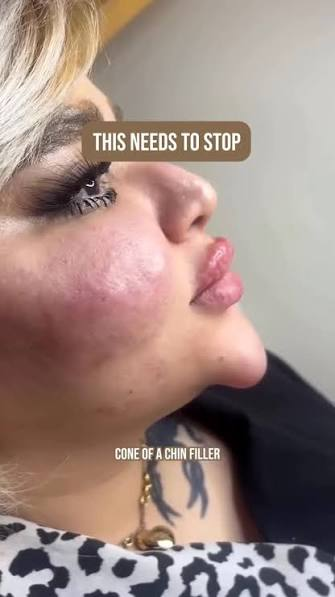
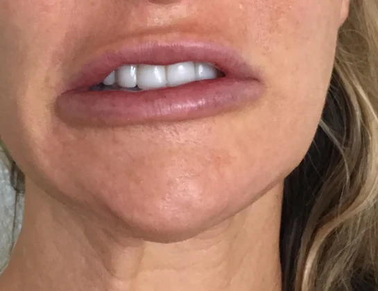
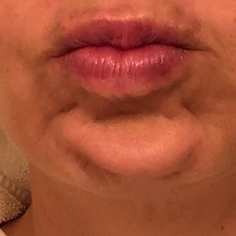
太尖、太长、太大块，
一眼就看得出“做过”。
Dr Alice 自然下巴设计
保留你的样子，只调整适合你的比例。
看看她是怎么调整的
她来找 Dr Alice 时，也最担心这个。
Before
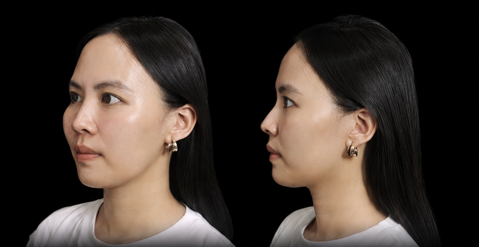
After
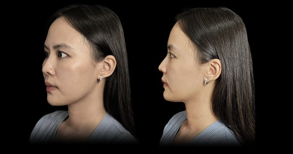
看看她是怎么调整的
她来找 Dr Alice 时，也最担心这个。
“我想下巴好看一点，
但不要一看就知道我打了。”
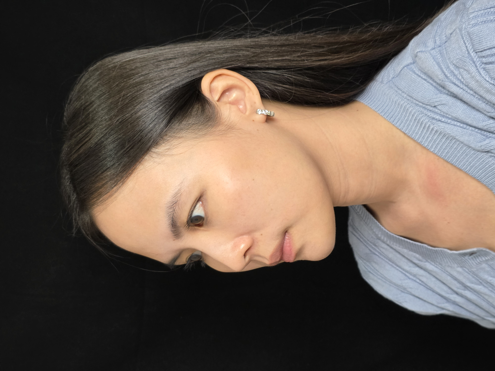
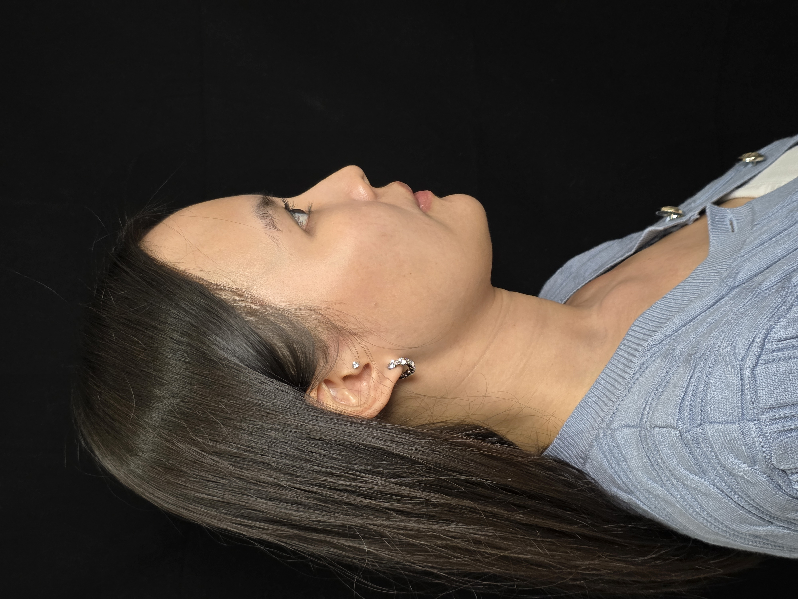
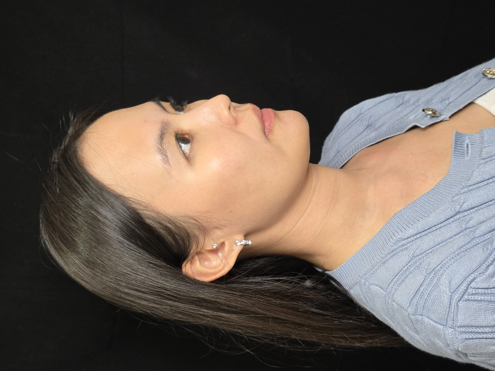
Dr Alice 没有刻意把她的下巴做得又尖又长。
而是根据她原本的脸型和比例，
设计适合她的长度和形状。
让脸型更顺、侧脸更精致，
但看起来还是她自己。
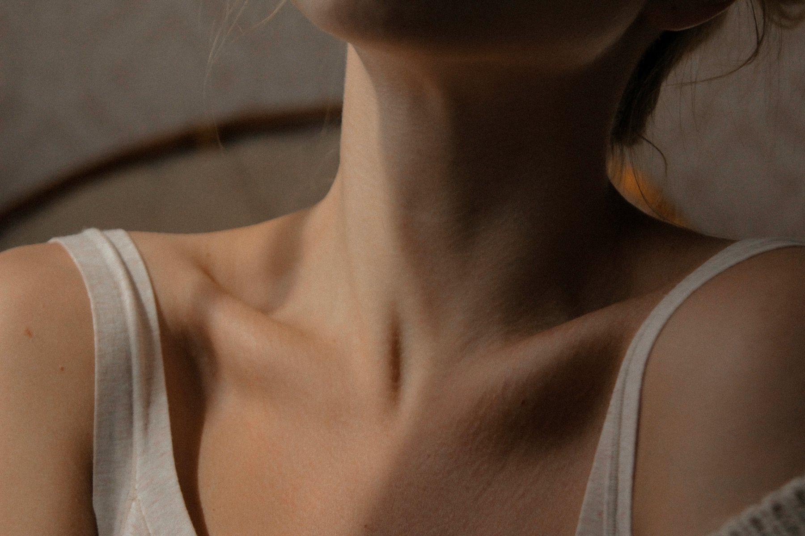
2 WEEKS AFTER
注射后 2 周，更自然
随着刚注射后的轻微肿胀慢慢消退，
下巴和原本的脸型融合得更自然。
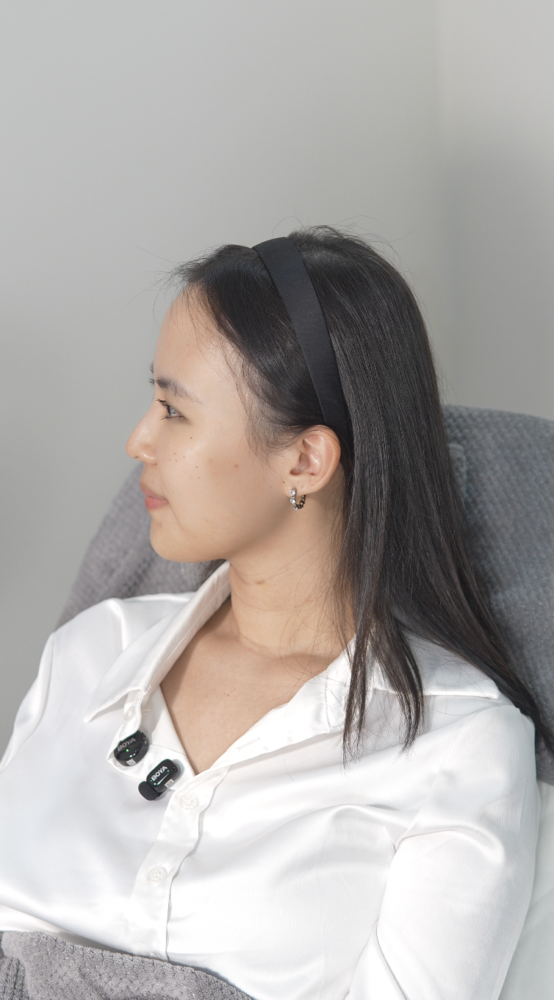
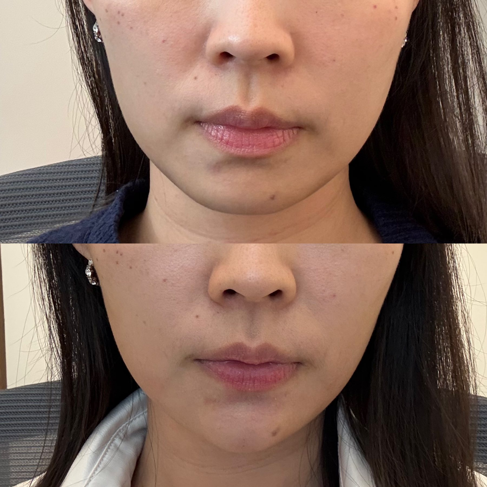
好的 Chin Filler，不是让人注意到你的下巴。
而是让人觉得，你的脸怎么变好看了。Dr Alice
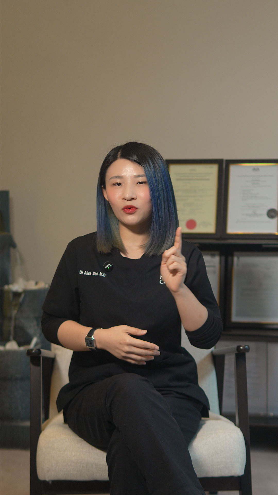
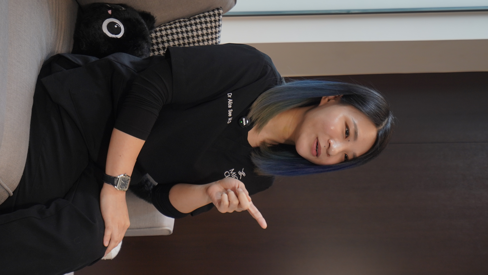
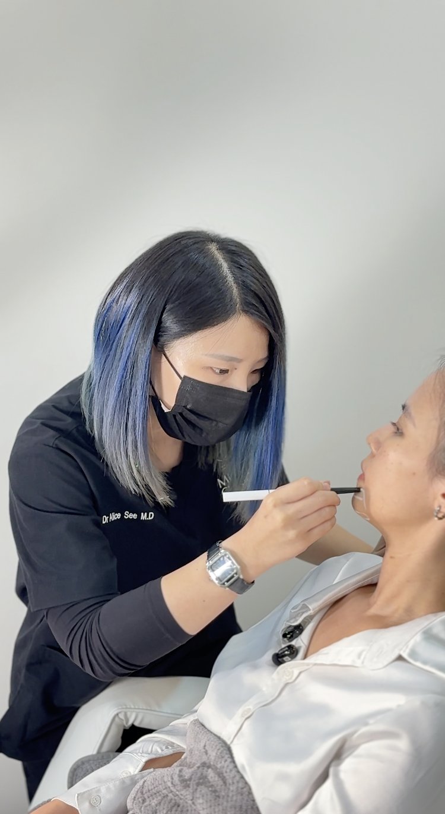
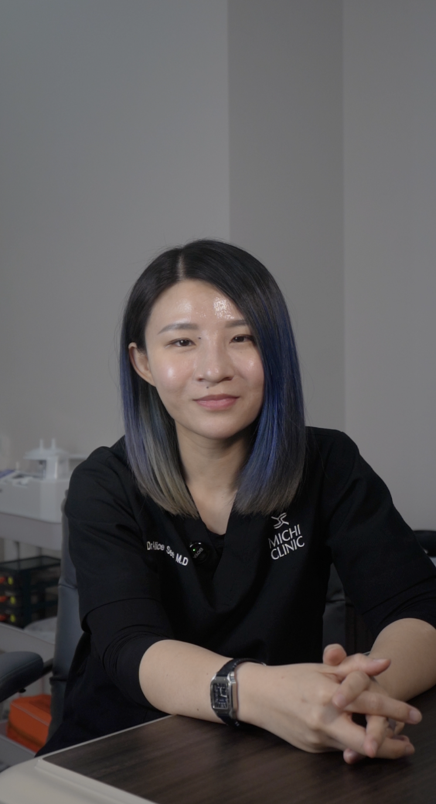
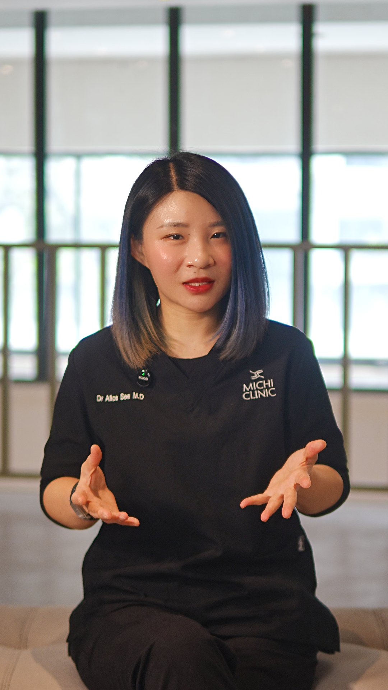
10年Facial Design 经验
1000+客户案例
多年 Filler注射经验
马来西亚医美医生培训导师
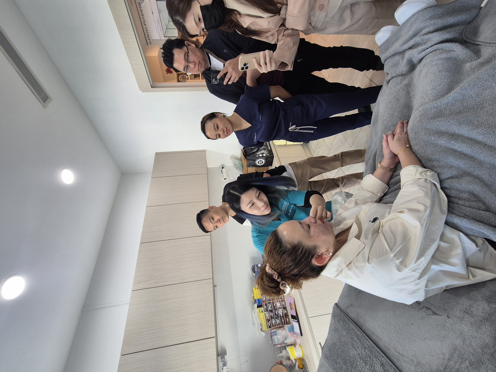
Michi Clinic ·
Desa ParkCity
想调整下巴，但不想让人看出你做了？
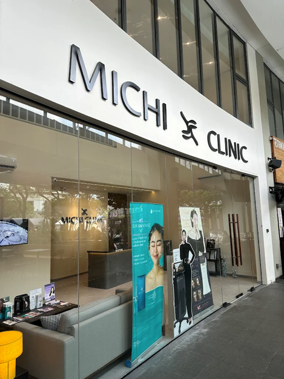
No. 3, Jalan Intisari Perdana
Desa ParkCity, 52200 Kuala Lumpur